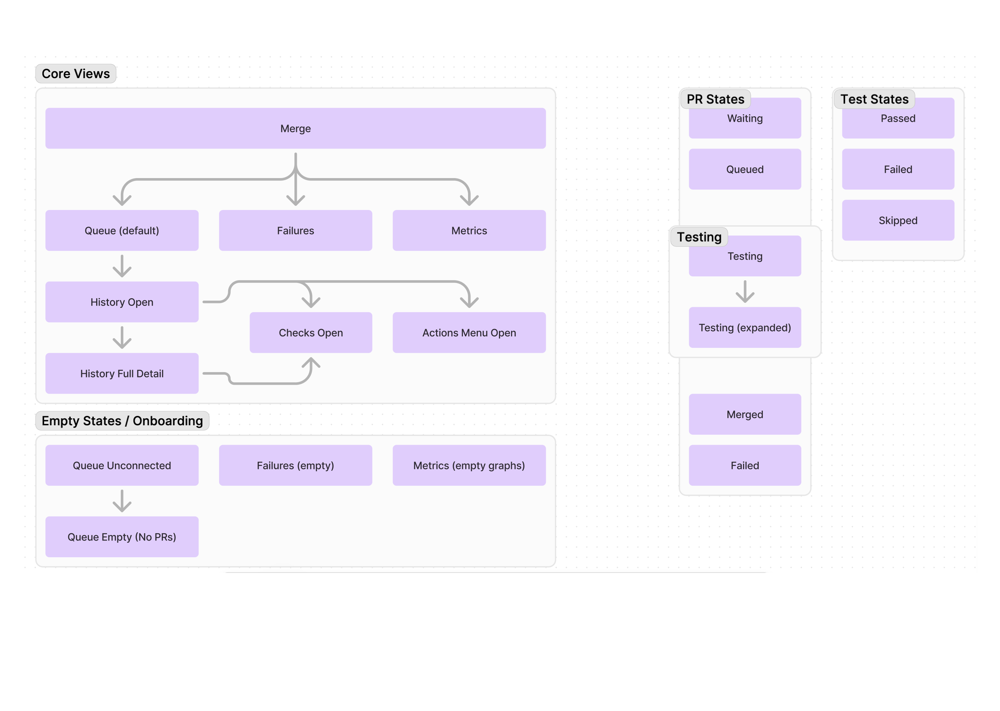
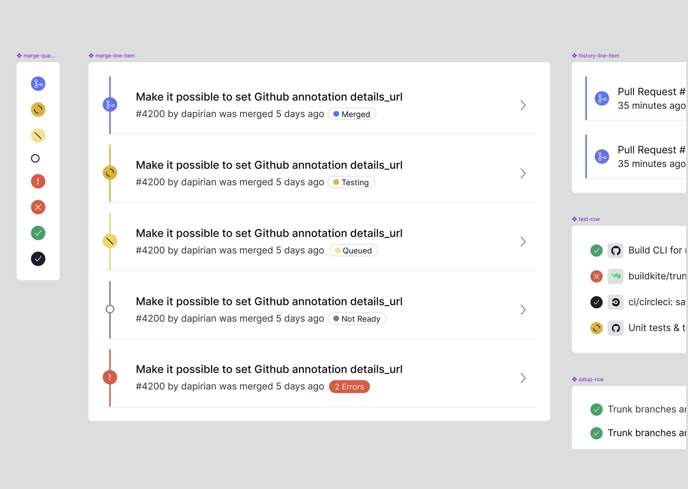

A merge queue is a tool that automates PR merges into your repo's main
branch.
Specifically, it resolves two common problems:
A PR is branched off an old commit of main.
Two PRs work independently but not together.
Who Will Use This?
DevEx Owners will set up and monitor their team's queue.
ICs will log in and use merge to check in on their PRs.
They will want to learn and take action if their PR is stuck.
Competitive Research & Planning
I always begin with thorough competitive research. It usually isn't worth it
to reinvent the wheel. Part of competitive research is asking the right
questions:
What can I find that will help us move quickly?
What do stakeholders have in mind? What are we competing with?
What are our users looking at? What are their expectations based on?
I did not make this lovely diagram, but we used it a lot
Sketches I did to work through many ideas quickly
20% Designs
The goal of 20% designs is to generate strong opinions without investing a
lot of time.
These designs are usually shared very frequently and only with project
stakeholders.
Looking back, many of these views were almost comically simple
What more could you want?!
After several collaborative sessions, we got here
An example with timeline expanded
20% Feedback
We started scoping in two other views: errors and metrics.
We worked through timeline direction and how to show more items.
We decided on a sidebar for pull request history.
We collaborated on what kind of data we wanted to show in the default
sidebar.
We hashed out details on viable data visualizations
We went with a sidebar view for PR history
Development Begins!
As Engineering built and learned from design partners, these problems arose:
Users wanted to see a more robust timeline history.
Users wanted to move things up and down in the queue.
A basic alert system was needed for trials, errors, etc.
We had unclear visual storytelling as items merged in or moved around.

A diagram I made to help understand the expanding workflows and states
Prototype I made to help demonstrate how to animate state transitions
Additional interactions and states
Complex history
Early onboarding
Empty state before anything is queued
Failures view
Metrics view
Ongoing Support
A product is never truly handed off. Since its launch, here are a few
initiatives we've worked on:
We added actions to remove queue items, promote items, and download
impacted targets.
We added a first-of-kind parallel merging concept.
We added a light mode across the product.
We removed the visualizations in sidebar, as they weren't adding a lot of
value.
We auto-expanded history items because users often cared about them first.
RIP sidebar
Cleaner sidebar with easy access to run logs
Synchronous merging graph

Expanded component library
Initiative: Self-Serve and Onboarding
After launching the product, we discovered some gaps in the user journey,
namely:
Many users created queues on "unqualified" repos.
Even for qualified repos, true conversion was poor.
A diagram we collaborated on to understand onboarding
Onboarding Broadly
To help users onboard to Merge and funnel users to the product they signed
up for, we implemented a new onboarding flow.